흔들리는 한 점이 이웃을 흔들고, 그 흔들림이 차례로 전해지면 파동이 된다. 한 점의 시간 그래프와 한 순간의 위치 그래프가 같은 파동을 어떻게 다르게 보여 주는지, 그리고 두 그래프를 잇는 위상까지 따라간다.
코너: 탄성과 단진동 (③)
훅의 법칙을 1678년 발표. 생전 초상화는 전해지지 않는다(진위 논란).
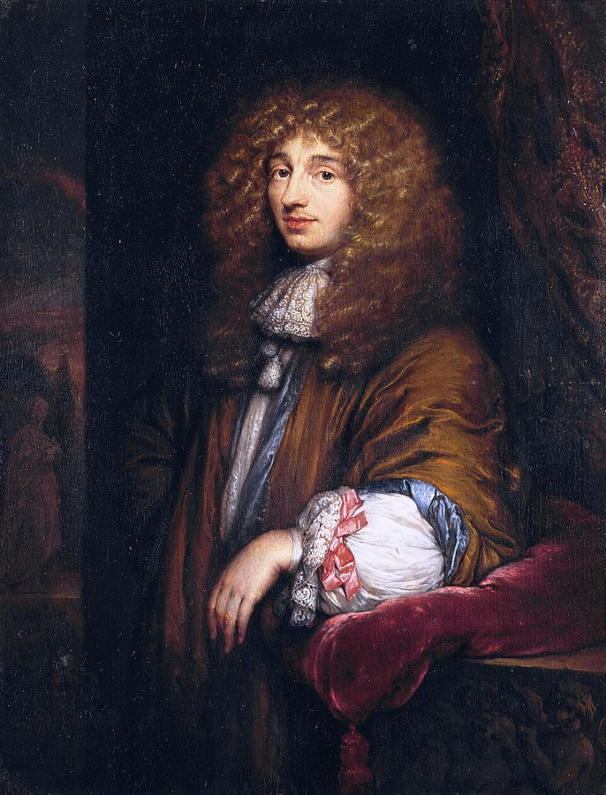
코너: 전달과 이동 (④)
진자시계(1656), 빛의 파동 이론.
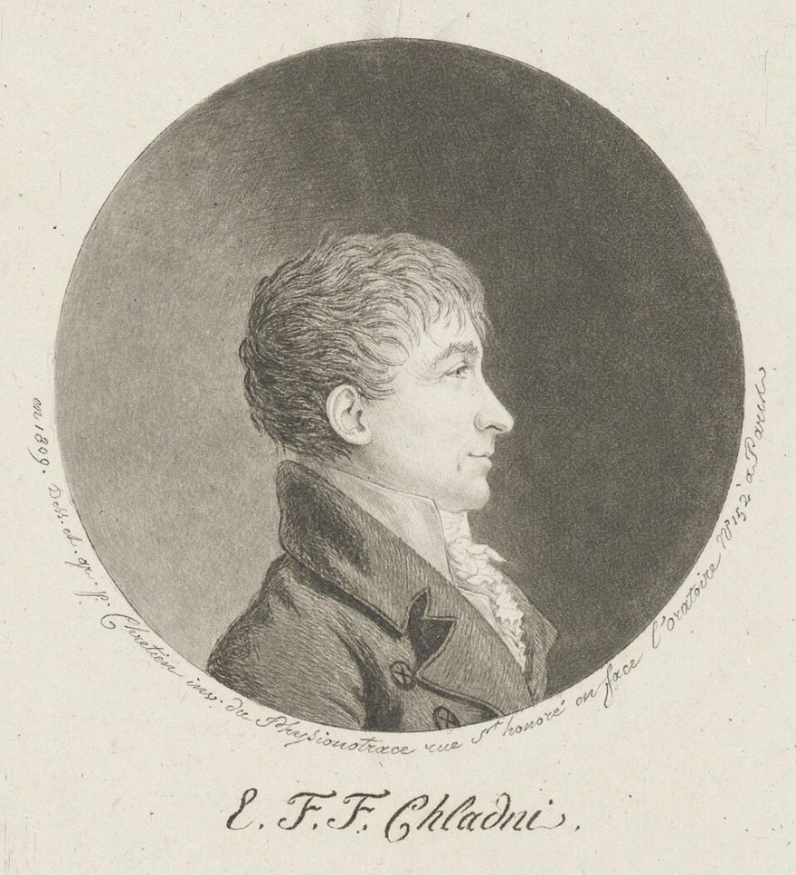
코너: 다양한 파동 (⑥⑦)
1787년 판의 진동 무늬(클라드니 도형)를 책으로 펴냄.
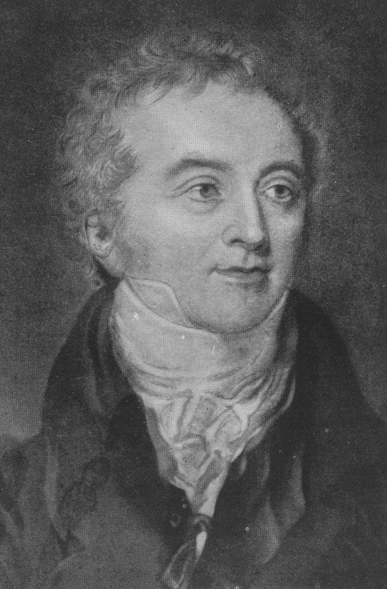
코너: 위상 (⑪)
1801년 빛의 간섭 실험. 다음 시간 ‘중첩·간섭’과 이어짐.
① 파동은 무엇이 이동하는 것일까? (③④)
② 횡파·종파 말고 어떤 모양의 탄성파가 있을까? (⑤⑥⑦)
③ 같은 파동을 위치 그래프와 시간 그래프로 그리면 무엇이 다를까? (⑧⑨⑩)
④ 두 점이 얼마나 어긋나 있는지는 어떻게 나타낼까? (⑪)
성취기준 탄성파의 진행·투과·반사를 이해하고 활용 예를 찾아 과학의 유용성을 인식한다. 이 덱은 앞부분(표현·종류·위상), 다음 덱 ‘탄성파 ②’가 반사와 활용이다.
≈ 칸/초
k가 클수록, m이 작을수록 빠르다 → 매질의 성질이 속력을 정한다
| 횡파 | 종파 | |
|---|---|---|
| 진동 방향 | 진행 방향과 수직 | 진행 방향과 나란함 |
| 예 | 줄의 파동, 수면파, 지진파 S파 | 음파, 지진파 P파, 용수철 앞뒤 |
| 모양 | 마루·골 | 밀한 곳·소한 곳 |
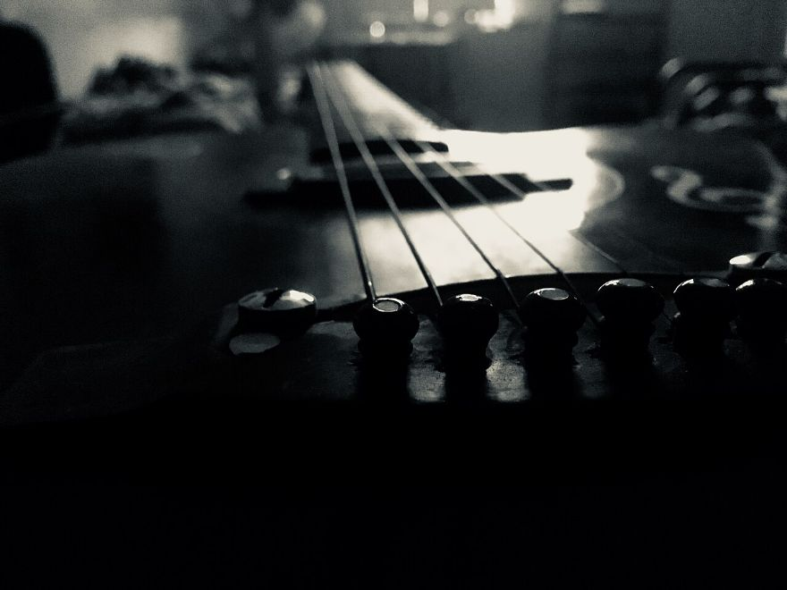
기타 줄: 줄 위의 횡파
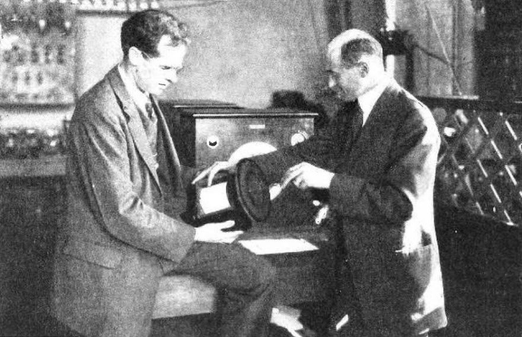
스피커 원뿔: 공기 속 종파(음파)
횡파
줄·용수철은 흔드는 방향에 따라 횡파·종파 모두 만들 수 있다.
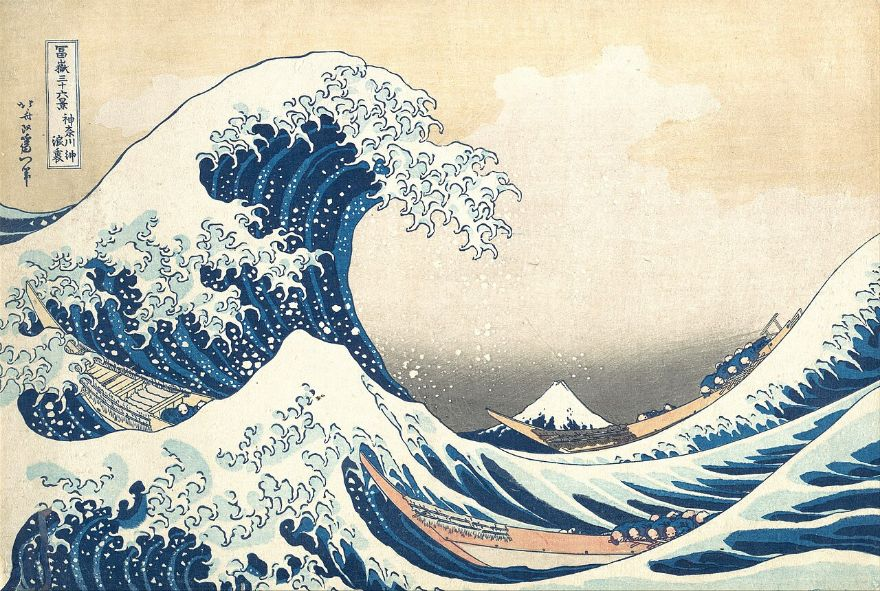
횡파(교과서)
물결은 눈에 보이는 대표적 파동. 호쿠사이의 그림(19세기).
종파
공기 속 소리는 약 340 m/s (20 ℃ 근처). 스피커 원뿔의 앞뒤 진동이 만든다.
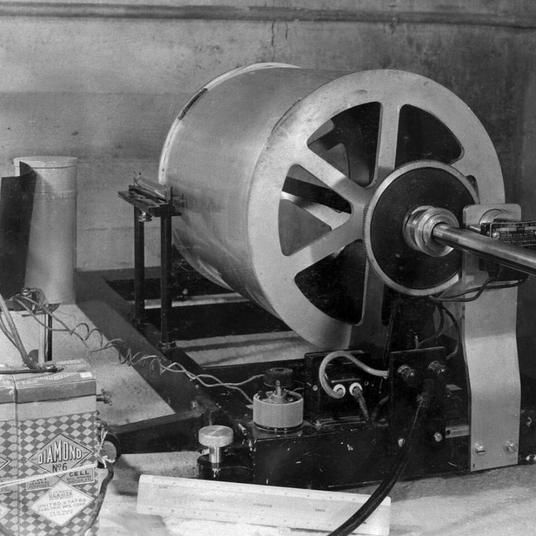
P파(종) · S파(횡)
지각 안에서 P파 약 6 km/s, S파 약 3.5 km/s(대략값). 사진은 지진계(Wood-Anderson).
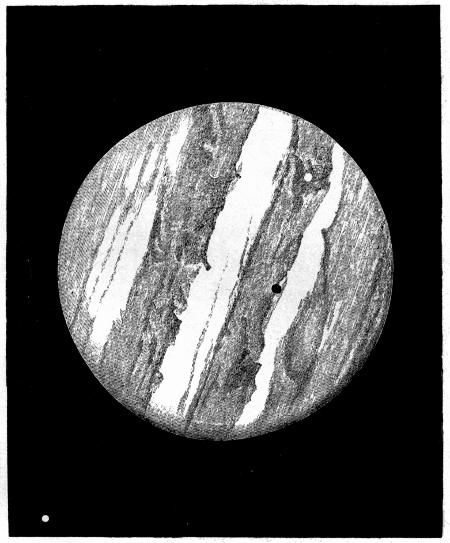
2차원 정상파
판 전체가 마디선을 경계로 진동한다. 클라드니(1787)가 모래로 시각화.
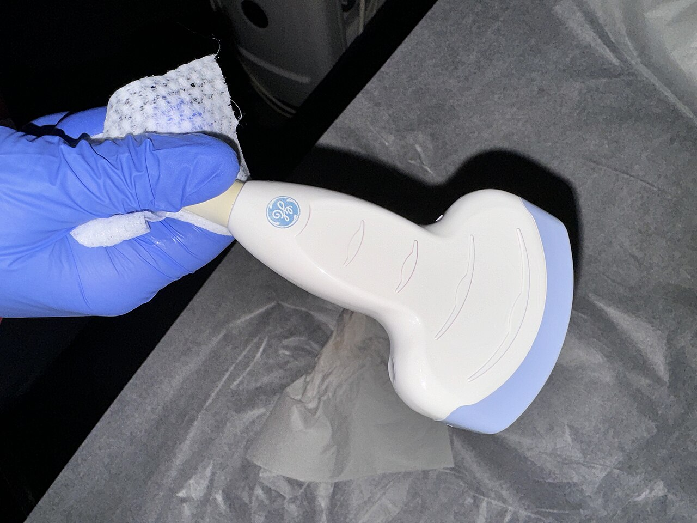
종파
진동수 2~13 MHz의 초음파로 몸속을 본다(교과서 96쪽).
공통점 모두 탄성을 지닌 매질이 있어야 전달된다. 진공에서는 전달되지 않는다(전자기파와 다른 점). 매질의 각 점은 제자리에서 단진동한다.
클라드니가 그린 판 진동 무늬(1787, 판화)
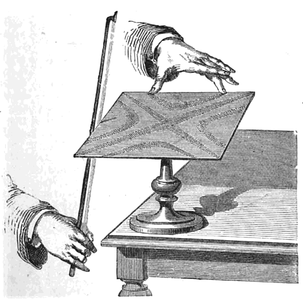
판을 활로 켜 소리를 내는 모습(판화)
읽는 법 마디선(모래가 모이는 곳)은 움직이지 않는 곳, 양쪽은 서로 반대 위상으로 오르내린다. 진동수가 높을수록 마디선이 늘어난다.
파동 전체가 평행 이동한다. 오른쪽으로 가는 파동에서 점은 왼쪽 이웃의 높이를 따라 간다. 왼쪽 이웃이 더 높으면 ↑, 낮으면 ↓.
마루·골에서는 잠깐 멈춘다. 방향이 바뀌면 결과가 반대가 된다.
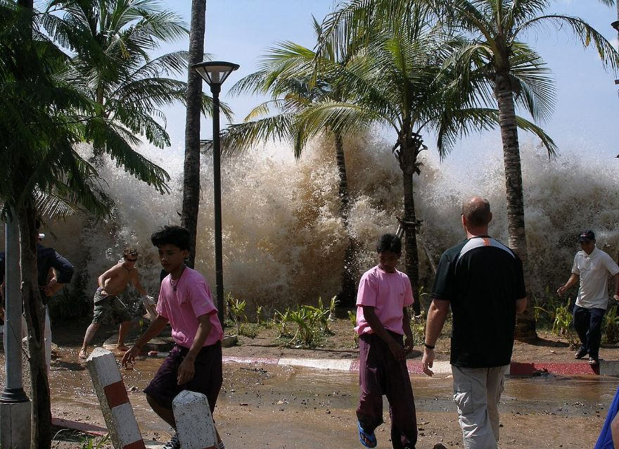
한 순간의 모습 → 위치 그래프(2004 인도양 쓰나미)
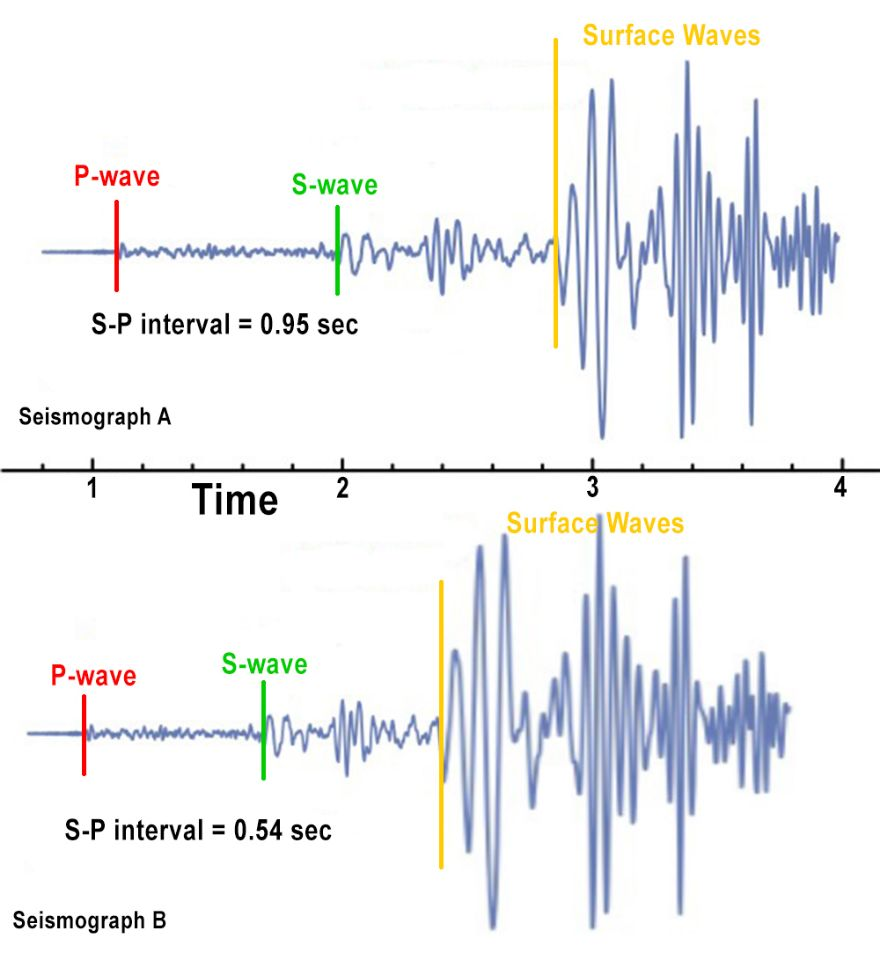
지진계 기록 → 시간 그래프
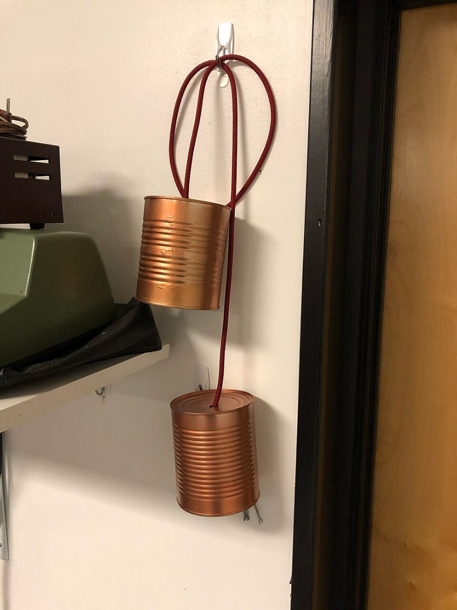
실 전화기(교과서 92쪽 도입)
실 전화기 성능을 높이려면?
실을 팽팽히 하면 파동의 속력이 커지고 소리가 빨리 전해진다. 실이 늘어지면 소리가 약해진다.
① 탄성파 = 탄성 매질에서 이웃으로 진동이 전달되는 파동. 매질은 제자리, 모양·에너지가 이동.
② 진동 ⊥ 진행 = 횡파 / 진동 ∥ 진행 = 종파
③ 위치 그래프 → 파장 λ, 시간 그래프 → 주기 T. 둘을 잇는 식 v = λ/T = fλ. 속력은 매질이 정함.
④ 위상: 단진동의 한 주기 중 단계. 거리 Δx 떨어진 두 점의 위상차 Δφ = 2πΔx/λ
소리를 줄이는 헤드폰은 반대 위상의 소리를 더해 소음을 상쇄한다 → 다음 시간 ‘중첩과 간섭’.
Q1. 주기가 0.1초인 파동의 진동수는? (교과서 확인 03)
f = 1/T = 10 Hz
Q2. 파동이 지나가는 동안 매질의 한 점이 어떻게 움직이는지 설명하시오.
한 점은 제자리 부근에서 평형 위치를 중심으로 단진동한다. 파동과 함께 이동하지 않는다.
Q3. 위치 그래프와 시간 그래프에서 각각 읽을 수 있는 양을 쓰시오.
위치 그래프: 파장·진폭, 시간 그래프: 주기(진동수)·진폭.
Q4. 반 파장 떨어진 두 점의 위상차와 운동의 관계를 쓰시오.
위상차 180°. 두 점은 항상 반대 방향으로 같은 크기만큼 움직인다.
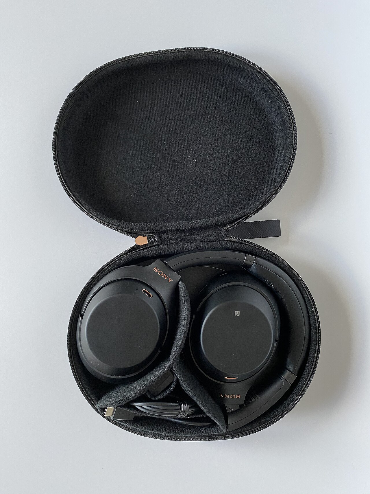
소음 제거 헤드폰: 반대 위상으로 상쇄
· 단진동(앞 시간)
· 탄성파 ② 반사·활용(다음)
· 파동의 중첩·간섭
| 사용 장 | 파일 이름 | 작가 | 라이선스 |
|---|---|---|---|
| ② | Caspar Netscher - Christiaan Huygens, the as | Caspar Netscher | Public domain |
| ②⑦ | Chladni portrait by Chretien 1809.jpg | Gilles-Louis Chrétien | Public domain |
| ② | Thomas Young by Thomas Lawrence.jpg | Public domain | |
| ⑤⑥ | Close-up of a guitar.jpg | Acagastya | CC0 |
| ⑤⑥ | Edward Kellogg & Chester Rice with cone spea | W. T. Meenam | Public domain |
| ⑥ | Tsunami by hokusai 19th century.jpg | Katsushika Hokusai | Public domain |
| ⑥ | Wood-Anderson seismograph recorder, with syn | Bureau of Reclamation | CC BY-SA 2.0 |
| ⑥⑦ | I 538 - plate 1.jpg | Mary Somerville | Public domain |
| ⑦ | Bowing chladni plate.png | Unknown authorUnknown author | Public domain |
| ⑨ | 2004-tsunami.jpg | David Rydevik (email: david.ry | Public domain |
| ⑨ | S-P-interval-seismogram-distance-to-earthqua | Benjamin J. Burger | CC BY-SA 4.0 |
| ⑩ | Tin Can phones TMW.agr.jpg | ArnoldReinhold | CC BY-SA 4.0 |
| ⑫ | Sony-WH-1000XM3-kabellose-Bluetooth-Noise-Ca | www.digitalpush.net | CC BY 4.0 |
| ⑥ | A medical ultrasound linear array probe, sca | Harrison Keely | CC BY 4.0 |
사용 장은 슬라이드 번호(①~⑫)다. 일부는 크기를 줄여 사용했다. 파일별 원본 주소는 같은 폴더의 credits.json에 있다. 시뮬레이션과 도식은 직접 제작.